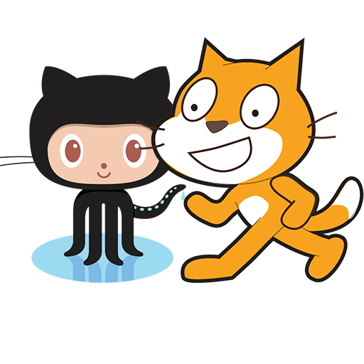

Git+Scratch
Log In
Sign Up
New Repo / Import Repo
Team
Git+Scratch
Log In
Sign Up
New Repo / Import Repo

Git + Scratch
Collaboration just got so much easier with GitScratch.
Fork, not remix
Scratch has always been centered around learning from others. Remixing just got so much easier.
The Team
Creators of Git + Scratch